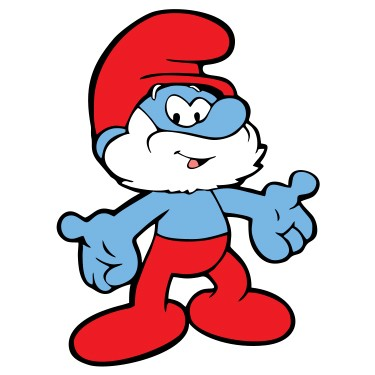

Kötü bir durum söz konusu olduğunda Şirin Köyü'ndeki herkes Şirin Baba'ya danışır. Şirin Baba,büyü ve iksir yapımında oldukça başarılıdır.
⭐ Şirinler ⭐

Şirin Baba

Şirine
Olaylar karşısında diğer Şirinlerden daha hassastır.Güzelliğine çok önem verir.

Cesur Şirin
Genç bir şirin olmasına rağmen kahverengi sakalı ve kaşları vardır. İskoç eteği giyer ve korkusuzdur. Şapkasının ucunda tüylü bir topak vardır

Gözlüklü Şirin
Genelde yanlış şeyler yapmasına rağmen, kendini Şirin Köyü'nün en zeki Şirini olarak görür.Saçma fikirlerinden dolayı diğer Şirinler tarafından tekmelenerek köyden atıldığı sıklıkla görülür.

Güçlü Şirin
En güçlü şirindir. Kolunda kalp şeklinde bir dövme bulunur. Ağırlık kaldırıp, spor yapan bir şirindir. Evinde spor aletleri vardır.

Şakacı Şirin
Şirinlerle eğlenmekten zevk alan bir Şirindir. Daima aynı hileyi kullanır: sarı-kırmızı renklerde bir kutuyu kurbanına hediye olarak verir ve içinden süpriz şakalar çıkar.Genel olarak bu bir patlayıcıdır.

Aşık Şirin
Şirine köye geldiğinden beri ona aşıktır. Rüyalarında onu görür, ismini ağaçlara kazır ve "seviyor, sevmiyor..." diyerek papatya falları bakar. Şirine ona ters davrandığı zaman bütün gece ağlar.

Sakar Şirin
Yaptığı her işi mutlaka sakarlığıyla en az bir kez bozan, dikkatsiz bir Şirindir. Kaya koleksiyonu vardır. Sakarlığı yüzünden bu kayalarıyla da pek çok kez başına dert açmıştır.

Huysuz Şirin
Şirin Köyü'nün asosyal Şirinidir. Genellikle "...dan nefret ediyorum" tarzında cümleler kurar. Yüzünde genelde uykulu ve mutsuz bir görünüm vardır.

Süslü Şirin
Süslü, dış görünüşe çok önem veren, şapkasında pembe bir çiçekle dolaşan bir Şirindir. Genellikle elinde bir ayna vardır ve bu aynada çok beğendiği kendi görüntüsünü sık sık öper.

Usta Şirin
Şirin Köyü'nün tulum giyen ve kulağının arkasında daima bir kalem bulunan becerikli sakinidir. Köydeki onarım, tamir işlerinden sorumlu olmakla beraber sürekli yeni bir icat peşindedir.

Tembel Şirin
Uykucu Şirin'dir. Zamanının çoğunu, gece ya da gündüz, yatağında, hamakta ya da herhangi bir yerde uyuyarak geçirir.

Ressam Şirin
Pek çok görsel sanatta yetenekli, başarılı bir ressamdır. Genellikle kırmızı bir ceket ve siyah bir kravat takarken görülür.

Şair Şirin
Sanatçı ruhlu bir şairdir. Zamanının çoğunu doğada şiirlerine malzeme arayarak geçirir. Bazen dizeler arasında uyak kurmakta zorlanır. Genellikle küçük kazalar geçirdiğinde daha verimli bir şair olur.

Terzi Şirin
Köydeki bütün kıyafetleri yapan Şirindir. Sıklıkla bir iğneyle ya da boynunda asılı bir mezurayla görülür.